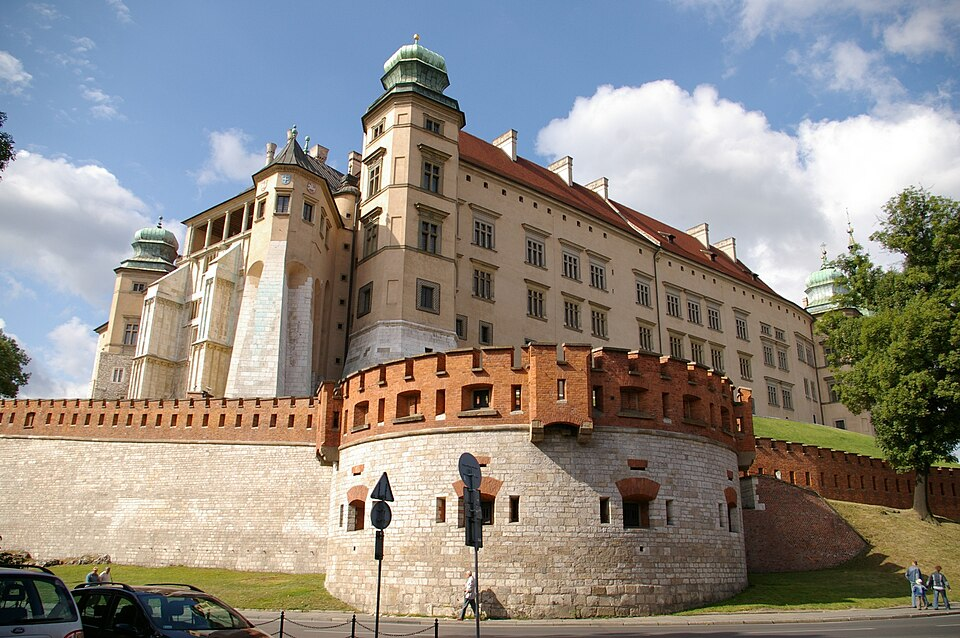
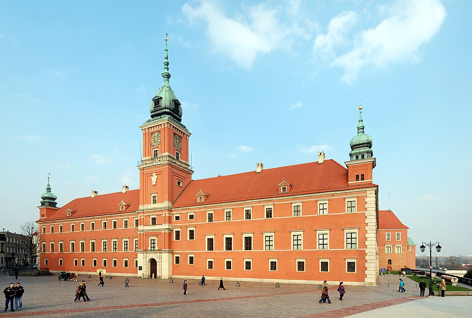

Odkryj największe miasta w Polsce!
Poznaj bogatą historię i wyjątkowy klimat czterech niezwykłych miast: Krakowa, Warszawy, Wrocławia i Poznania.
Zobacz galerię! Skontaktuj się z nami!Kraków

Dawna Stolica Królów
Miasto o niezwykłym klimacie, w którym historia spotyka się z tętniącym życiem kulturalnym. Zachwyca Zamkiem Królewskim na Wawelu, największym średniowiecznym Rynkiem w Europie oraz nastrojowymi uliczkami artystycznego Kazimierza.
Zobacz w galeriiWarszawa

Stolica Polski
Tętniąca energią przestrzeń o niezwykłym klimacie, w której burzliwa historia spotyka się z nowoczesnym rytmem stolicy. Zachwyca okazałym Zamkiem Królewskim, wpisaną na listę UNESCO Starówką oraz nastrojowymi ogrodami pałacu w Wilanowie.
Zobacz w galeriiWrocław

Miasto mostów
Tętniąca energią przestrzeń o niezwykłym klimacie, w której historyczne dziedzictwo spotyka się z nowoczesnym rytmem spotkań. Zachwyca monumentalną Halą Stulecia, najbardziej urokliwym Rynkiem w Polsce pełnym ukrytych krasnali oraz nastrojowymi alejkami klimatycznej Dzielnicy Czterech Wyznań.
Zobacz w galeriiPoznań

Serce Wielkopolski
To wyjątkowe miejsce zachwyca renesansowym Ratuszem ze słynnymi koziołkami, urzekającym Starym Rynkiem pełnym kolorowych kamieniczek oraz nastrojowymi alejkami historycznego Ostrowa Tumskiego.
Zobacz w galerii